The IndexRange operator uses its operands to build an Index Range. A result of evaluation is an operand with the IndexRange data type. It can be used in any context where the IndexRange data type is allowed; e.g. Subscript operator, Assignment operator, and IndexRange operator itself.
expression1 : expression2
| DBL Number | IndexRange |
If both operands are scalar, the IndexRange operator assigns a value of its left-hand operand (expression1) to initial boundary of the resulting range, and a value of its right-hand operand (expression2) to final boundary of the resulting range.
If the left-hand operand (expression1) has IndexRange data type, its initial boundary is assigned to initial boundary of the result range.
If the right-hand operand (expression2) has IndexRange data type, its final boundary is assigned to final boundary of the result range.
IndexRange Symbols can be used as operands in order to define initial and final boundaries of an index range.
DBL numbers are coerced to 32-bit integers to perform the operator.
1:9 /* index range from 1 up to 9 */
10:0 /* decremental index range from 10 to 0 */
7:7 /* index range consist of only single index 7 */
5:$> /* index range from 5 up to a top index */
$<:10 /* decremental index range from a top index to 10 */
IndexRange data type
IndexRange Symbols
Subscript Operator
CalcExpress Operators
CalcExpress Syntax
CalcExpress Overview
IndexRange Symbols produce an operand of the IndexRange data type that specifies entire range of array indexes. You may use these symbols in any context where operands of the IndexRange data type are allowed; e.g. Subscript operator and IndexRange Operator.
The $> symbol specifies an incremental index range from zero up to the maximum possible value of an array index (231-1) with the step of 1. The $> symbol produces the same value as the 0:0x7FFFFFFF expression.
The $< symbol specifies a decremental index range from the maximum possible value of an array index (231-1) to zero with the step of -1. The $< symbol produces the same value as the 0x7FFFFFFFF:0 expression.
You can safely use the IndexRange Symbols in the Subscript operator. CalcExpress adjusts the boundaries of an index range to the array size (dimension size for 2D arrays). That is, if a boundary value is greater than the top index (array size - 1), it is forced to the top index value.
vec = vector(1,3,5,7); /* vec is 1D array {1,3,5,7} */
v1 = vec[$<]; /* v1 equals {7,5,3,1} */
v1[$>] = 0; /* v1 equals {0,0,0,0} */
/* Note: it can't be written as v1=0 */
v1[2:$>] = vec; /* v1 equals {0,0,1,3} */
v1[$<:1] = vec; /* v1 equals {0,5,3,1} */
v1 = v1[$<]; /* this reverses v1 */
/* mtx is 2D array (5 rows, 3 columns) with zero elements */
mtx = matrixn(0,5,3);
mtx[$>,0] = 2; /* zero column is {2,2,2,2,2} */
mtx[2,$>] = vec; /* 2nd row is {1,3,5} */
mtx = mtx[$>,$<]; /* this reverses order of columns */
IndexRange data type
IndexRange Operator
Subscript Operator
CalcExpress Operators
CalcExpress Syntax
CalcExpress Overview
The Subscript operator is used to access array elements. It allows accessing a single element as well as any subset of array elements.
array-exp [ index-exp ]
array-exp [ index-exp1 separator index-exp2 ]
The first syntax form is used to access elements in both 1D arrays and 2D arrays. The second form is only used to access elements in 2D arrays.
array-exp is an expression that has one of the array data types. If array-exp is a variable name, the variable is called the indexed-variable. Only indexed-variables are allowed as left-hand operands in the assignment operators. In other cases, the array-exp can be any valid expression of an array data type.
index-exp is an expression that specifies an index, an array of indexes (Index Array), or a range of indexes (Index Range) to access element(s) in an array. If the second form of the Subscript operator is used, the first index expression (index-exp1) specifies row(s) of 2D array, and the second (index-exp2) specifies column(s). Formally, an index expression can have one of the following data types:
| DBL Number | 1D Array of DBL | IndexRange |
Indexes are considered as 32-bit integer values; CalcExpress converts DBL numbers to integer indexes to perform the Subscript operator. The lowest index, which refers to the first element of an array (a dimension for 2D arrays), is zero (0). The index of the last element of an array is equal to the array size - 1 (similar for dimensions). Reading a value of an array element beyond the array bounds results in a default value (depending on the data type of the array elements, it can be zero, complex zero, or an empty string). An attempt to assign a value to an out-of-bounds element does not cause any changes (it is ignored).
separator is a punctuator that separates the first index expression from the second if the second syntax form of the Subscript operator is used (2D arrays). You can use either a comma or the @ character as the separator. The difference is a result of indexing when both index-expressions are an Index Range or an Index Array. For more information see Subscript Operator for 2D Arrays topic.
| Subscript Operator for 1D Arrays | Templates to subscript 1D Arrays |
| Subscript Operator for 2D Arrays | Templates to subscript 2D Arrays |
| Subscript with Index Ranges | |
| Subscript with Index Arrays |
IndexRange Operator
IndexRange Symbols
CalcExpress Operators
CalcExpress Syntax
CalcExpress Overview
This topic describes the particularities of using the Subscript operator to access elements in 1D arrays. For general information, refer to the Subscript operator topic. In addition, see Templates to subscript 1D Arrays.
array-exp [ index-exp ]
An index expression (index-exp) can produce scalar index, Index Array, or Index Range. The data type of an index affects the dimensionality of accessible subset in an array.
A result of evaluation has the same value and type as accessible subset. If an index is out of range, the corresponding element of a result has a default value (zero for numbers or empty for strings).
If an accessible subset is a scalar-value, it is only possible to assign a scalar-value to it. Input value must have the same type as elements of an original array. If an index refers to an element beyond bounds of an original array, an assignment is not performed.
If an accessible subset is 1D array, you can assign either a scalar-value or 1D array to it. Input value (or its elements) must have the same data type as elements of an original array.
If an index refers to an element beyond bounds of an original array, an assignment is not performed; herewith, the respective element of an input value, if it is an array, is skipped.

Templates to subscript 1D Arrays
Subscript Operator
IndexRange Operator
IndexRange Symbols
CalcExpress Operators
CalcExpress Syntax
CalcExpress Overview
This topic describes the particularities of using the Subscript operator to access elements in 2D arrays. For general information, refer to the Subscript operator topic. In addition, see Templates to subscript 2D Arrays.
Typically, to subscript a 2D array, you specify two index expressions in Subscript operator. The first index specifies row(s), and the second specifies column(s). You can omit the second index to access whole row(s).
array-exp [ index-exp1 , index-exp2 ]
array-exp [ index-exp1 @ index-exp2 ]
array-exp [ index-exp ]
Typically a comma is used to separate indexes in the Subscript operator. However, you can use the @ character for this purpose. The use of the @ character has the same effect as use of the comma except if both indexes are non-scalar.
An index expression can produce scalar index, Index Array, or Index Range. Combination of index data types affects the dimensionality of accessible subset in an array.
Further description is in order of index type combinations. It includes the following items:
If both indexes are scalar, you have access to a single element of an array.
A result of evaluation is an element of array that is located in row specified by the first index and in the column specified by the second index. If any index is out of range (depends on size of corresponding dimension), a result of evaluation is default (zero for numbers or empty for strings).
You can only assign a scalar-value to an array element. Input value must have the same data type as elements of an original array. Nothing happens if any of specified indexes is out of range.
x = M[2,3];
M[0,5] = 100;
If one index is scalar and the other is either an Index Array or an Index Range, you have access to 1D subset of an original 2D array. An index, which is scalar, specifies either a row or a column of an original array in dependence on its position. Another index specifies a set of indexes to access elements of other dimension.
To access array elements, indexes are considered as a set of index-pairs (row,column) that specifies an accessible subset of array elements. If the first index is scalar, the row is constant, and the column takes sequential values specified by the second index. If the second index is scalar, the column is constant. Number of index-pairs is the same as size a non-scalar index either has (Index Array) or specifies (Index Range). Size of accessible subset equals the number of index-pairs.
A result of evaluation is 1D array that is equal to an accessible subset. If an index-pair refers to an element beyond bounds of an original array, the respective element of a result array has a default value (zero for numbers or empty for strings).
An accessible subset is similar to 1D array; you can assign a 1D array to it as well as assign a scalar-value. Elements of an input value must have the same data type as elements of an original array.


If both indexes are an Index Array and/or an Index Range, the dimensionality of accessible subset depends on the used syntax form. There are two forms that are similar except used index separator.
array[index1 , index2]
The comma separator is used to specify a 2D accessible subset of an original 2D array. The first index specifies row indexes; the second specifies column indexes. Number of rows of an accessible subset is equal to the size the first index either has (for Index Array) or specifies (for Index Range). Number of columns of an accessible subset is equal to the size the second index either has (Index Array) or specifies (Index Range).
array[index1 @ index2]
The @ separator is used to specify a 1D accessible subset of an original 2D array. Indexes are considered as a set of index-pairs (row,column) that consist of respective elements of indexes; herewith, elements of the first index specify rows in the index-pairs, and elements of the second index specify columns. Number of index-pairs equals the smallest size the indexes have (for Index Arrays) or specify (for Index Ranges). Size of accessible subset equals the number of index-pairs.
A result of evaluation is equal to an accessible subset. It is 2D array, if the first syntax form is used (comma is separator), and it is 1D array, if the second form is used (@ is separator). If an element of an index is out of range, the respective element of a result array has a default value (zero for numbers or empty for strings).
For the first syntax form, an accessible subset has two dimensions (2D), so you can assign a scalar-value, 1D array, or 2D array to it. For the second syntax form, an accessible subset has one dimension (1D), so you can only assign either a scalar-value or 1D array to it. Elements of an input value must have the same data type as elements of an original array.


You can omit the second index in the Subscript operator to access entire row(s) in a 2D array:
array[index]
This form is similar to the expression: array[index,$>]. It assumes that the second index is an Index Range that specifies all columns, and it means access to the entire row(s) specified by the index. For more information, see IndexRange Symbols topic.
If the index is scalar, an accessible subset is 1D array, and it submits rules described in One index is non-scalar item in this section. If the index is non-scalar, an accessible subset is 2D array, and it submits rules described in Both indexes are non-scalar item in this section.


Templates to subscript 2D Arrays
Subscript Operator
IndexRange Operator
IndexRange Symbols
CalcExpress Operators
CalcExpress Syntax
CalcExpress Overview
Subscript operator allows specifying a range of indexes (Index Range) to access sequential elements in an array. If an Index Range is used as an index in Subscript operator, CalcExpress sequentially uses indexes of the specified range to access elements of an array.
If an Index Range is used as an index in a Subscript operator, CalcExpress coerces boundaries of an index range to the valid values. If a boundary is less than 0 it is coerced to zero. If a boundary is greater than or equal to the array size, it is coerced to the array size - 1. Boundaries are inclusive, so an Index Range always specifies at least one element of an array unless it is empty.
An Index Range has an IndexRange data type and is produced by IndexRange Operator, IndexRange Symbols, and IndexRange Functions.
V = vector("a","b","c","d","e","f"); /* V is 1D Array of Strings */
tmp = V[0:2]; /* tmp is 1D Array of Strings {a , b , c} */
V[0:2] = "-"; /* V now is {- , - , - , d , e , f} */
V[3:$>]= vector("X","Y","Z");/* V now is {- , - , - , X , Y , Z} */
V[$>] = tmp; /* V now is {a , b , c , X , Y , Z} */
V = V[$<]; /* this reverses V, V now is {Z , Y , X , c , b , a} */
Subscript Operator
IndexRange Operator
IndexRange Symbols
Subscript operator allows using array of indexes (Index Array) to access elements in an array. This feature makes it possible to access arbitrary elements in an array in the order of their interest.
If an Index Array is used as an index in the Subscript operator, CalcExpress sequentially uses elements of the Index Array as indexes to access elements in an original array. If an index is out of the range valid for the original array, it is ignored.
Formally, an Index Array must have the 1D Array of DBL data type; however its elements are coerced to 32-bit integers to perform the operation.
V = vector("a","b","c","d","e","f"); /* V is 1D Array of Strings */
ia = vector(0,2,4); /* Index Array: {0,2,4) */
out = V[ia]; /* out is 1D Array of Strings {a,c,e} */
V[ia] = "="; /* V now is {= , b , = , d , = , f} */
V[ia] = vector("X","Y","Z"); /* V now is {X , b , Y , d , Z , f} */
ia = vector(ia, ia+1); /* Index Array: {0,2,4,1,3,5} */
V = V[ia]; /* V now is {X , Y , Z , b , d , f} */
ia = vector(3,4,5,99); /* Index Array: {3,4,5,99} */
out = V[ia]; /* out now is {b,d,f, <empty string> */
V[ia] = "*"; /* V now is {X , Y , Z , * , * , * } */
a few use-cases of subscript operator with index arrays are explained below
CalcExpress expression
V = X[IdxArr] /* X is 1D array; IdxArr is Index Array */
Pseudo Code
if (V does't exist) create V;
resize V to size(IdxArr)
for (i=0; i<size(IdxArr); i++) {
idx = IdxArr[i];
if ((idx >= 0) && (idx < size(X))
V[i] = X[idx];
else
V[i] = default; /* 0 for numbers, empty for strings */
}
CalcExpress expression
X[IdxArr] = n /* X is 1D array; IdxArr is Index Array */
Pseudo Code
for (i=0; i<size(IdxArr); i++) {
idx = IdxArr[i];
if ((idx >= 0) && (idx < size(X))
X[idx] = n;
}
CalcExpress expression
X[IdxArr] = V /* X and V are 1D arrays; IdxArr is Index Array */
Pseudo Code
size = min( size(IdxArr), size(V));
for (i=0; i<size; i++) {
idx = IdxArr[i];
if ((idx >= 0) && (idx < size(X))
X[idx] = V[i];
}
| single element | Expression |
| array[idx] |
| 1D subset | Expression access in direct order |
Expression access in reverse order |
| array array[$>] |
array[$<] | |
| array[idx1:idx2] | array[idx2:idx1] | |
| array[idx:$>] | array[$<:idx] | |
| array[0:idx] | array[idx:0] |
Templates to subscript 2D Arrays
Subscript Operator
IndexRange Operator
IndexRange Symbols
Links for quick access: rows ; columns ; diagonals ; sub-arrays
| single element | Expression | |
| array[row , column] |
| 1D subset | Expression access in direct order |
Expression access in reverse order |
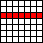 |
array[row , $>] array[row] |
array[row , $<] |
| array[row , C:$>] | array[row , $<:C] | |
| array[row , 0:C] | array[row , C:0] | |
| array[row , C1:C2] | array[row , C2:C1] |
| 1D subset | Expression access in direct order |
Expression access in reverse order |
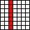 |
array[$> , column] | array[$< , column] |
| array[R:$> , column] | array[$<:R , column] | |
| array[0:R , column] | array[R:0 , column] | |
| array[R1:R2 , column] | array[R2:R1 , column] |
| 1D subset | Expression access in direct order |
Expression access in reverse order |
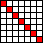 |
array[$> @ $>] | array[$< @ $<] |
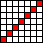 |
array[$> @ $<] | array[$< @ $>] |
| array[N:$> @ N:$>] | array[$<:N @ $<:N] | |
| array[0:N @ 0:N] | array[N:0 @ N:0] | |
| array[N1:N2 @ N1:N2] | array[N2:N1 @ N2:N1] | |
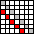 |
array[N:$> @ $>] | array[N:$> @ $>][$<] |
| array[$> @ N:$>] | array[$> @ N:$>][$<] | |
| array[R1:R2 @ C1:C2] | array[R2:R1 @ C2:C1] |
| 2D subset | Expression |
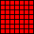 |
array array[$>] array[$> , $>] |
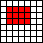 |
array[FirstRow:LastRow , FirstColumn:LastColumn] |
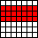 |
array[FirstRow : LastRow , $>] array[FirstRow : LastRow] |
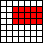 |
array[FirstRow : LastRow , FirstColumn : $>] |
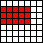 |
array[FirstRow : LastRow , 0 : LastColumn] |
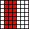 |
array[$> , FirstColumn : LastColumn] |
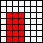 |
array[FirstRow : $> , FirstColumn : LastColumn] |
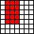 |
array[0 : LastRow , FirstColumn : LastColumn] |
Templates to subscript 1D Arrays
Subscript Operator
IndexRange Operator
IndexRange Symbols